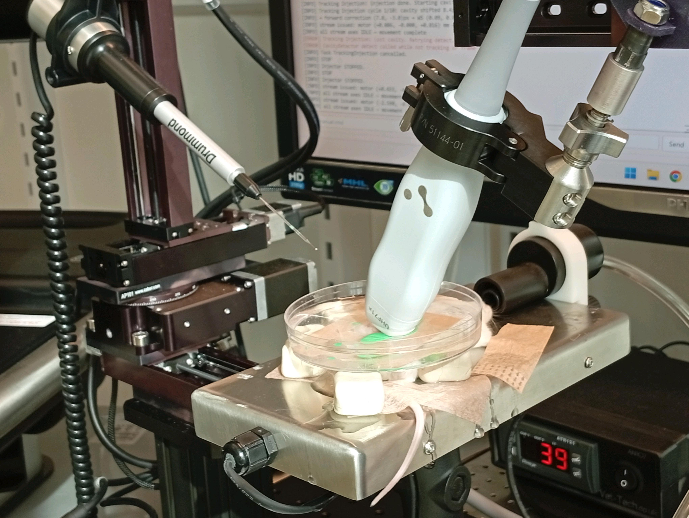
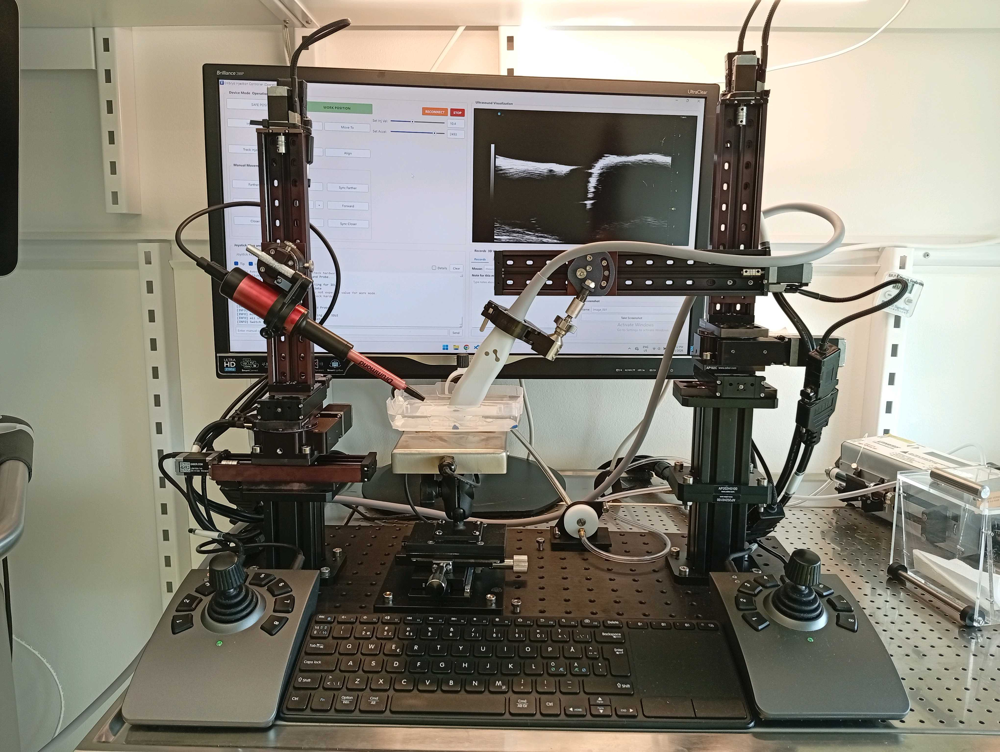
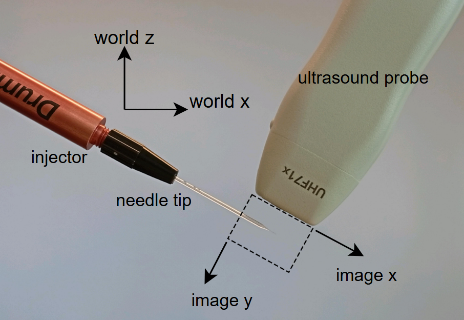
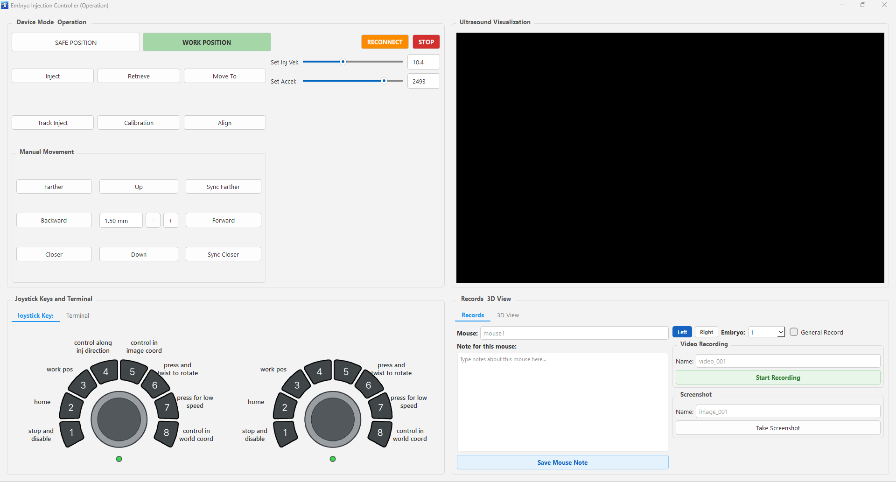
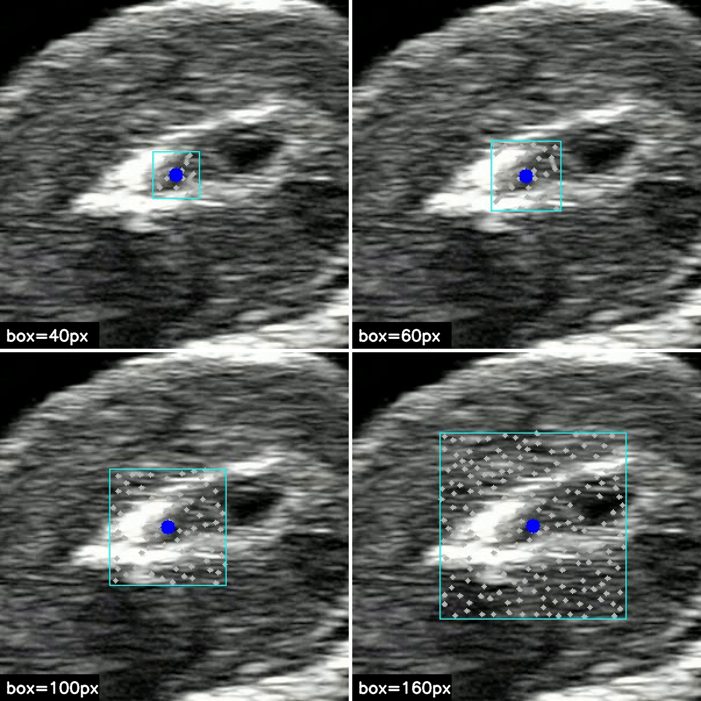

2026年冬天我在找毕设，在KTH Portal上看到Parag发布的招聘告示。Parag是KTH RPL部门的博士后，他当时正在招人和他一起做强化学习相关的研究。他看了我的简历之后，注意到我之前做的3D打印机项目，他觉得我有步进电机和线性运动框架相关的经验，因此推荐我加入这个自动注射系统（AIS）项目。
这个项目是卡罗林斯卡医学院（KI）的E教授的项目（名字就不说了），他们正在做小鼠胚胎发育学相关的研究，其中一步需要给小鼠胚胎做病毒注射。通过病毒注射可以跟踪胚胎细胞的分裂情况。越是早期的胚胎分化程度越低，发育学研究价值越高，但体积更小更脆弱。胚胎注射是使用极细的玻璃针头在超声实时成像引导下完成，全程要在小鼠活体麻醉窗口期内做完，精度和速度都直接影响胚胎的存活率。
最早E教授的组使用了纯手动操作台，靠手转丝杆旋钮移动注射针和探头。后面为了追求更高速高精度的注射，他们与KTH的RPL部门开始合作，找到那边的人来做自动注射系统。在我接手的时候，这套自动化系统已经做了大概半年，完成了硬件的选型，并且有基于Qt的配套控制软件。我在这个基础上继续工作了半年，在Parag的指导下，接受KI那边提出的需求，但是大多数时间都是我一个人进行开发。
硬件：直角坐标双臂平台
系统的运动平台由两条直角坐标机械臂构成，一条驱动注射针，一条驱动超声探头。每条臂有三根直线轴加一根绕Z轴的旋转轴，也就是四个自由度。直线轴让针和探头在操作空间内移动来完成注射，旋转轴允许双臂转动朝向后面的屏幕侧，给研究者进行胚胎暴露手术留操作空间。硬件是从Zaber公司定制的，Zaber是做精密运动控制的公司，提供线性移动框架及其控制方案，我们的线性移动框架由滚珠丝杠、步进电机和电磁限位开关构成，控制器和手柄也是从Zaber采购的，连接电脑后通过ASCII码和控制器通信，进而控制线性移动框架的运动。

两条臂的末端分别装着一根显微注射用的玻璃针和一个超声探头，两者的安装角度互相垂直。每条臂都有自己的控制器和摇杆，可以由摇杆手动控制针头移动，或者在软件中进行超声引导的自动注射。两臂运动范围都覆盖中间的操作区域，实际实验里对准的是小鼠所在的加热台。

软件：架构、重映射与追踪
软件基于Qt开发，用的PySide6的包，通过一个叫control的中间层（相当于一个mediator，同时管理一个任务状态机）调用四个后端模块——分别管注射针、探头、相机和视觉检测。前端和control之间是直接调用，但control和各个后端之间只能通过Qt的信号/槽跨线程通信，确保大多数模块可以独立运行以便调试，每个后端各自跑在自己的线程上。软件前端允许研究员创建实验记录，查看超声图像，控制整个系统进行注射等，前端还有自己的终端方便开发。

摇杆原生的行为是直接对应电机轴：推动摇杆，摇杆直接给驱动器发指令，不经过电脑。为了提供更符合操作员直觉的操作，让针尖在超声图像里移动对应到摇杆推的方向，我将摇杆的输出重新定向到一个不存在的虚拟设备地址，这样它发出的指令不会被电机直接执行，而是被一层转发逻辑截获，按标定得到的旋转角度做一次坐标变换，再把变换后的结果发给真正的硬件地址。由于这是Zaber的Python扩展不提供的功能，实现这个功能我让自己的Python程序持有串口，然后接管Zaber库的Transport接口（Zaber官方留的扩展点，允许换用不同的物理通道传输协议）——库正常的移动指令还是经这层转发写入串口，但摇杆发来的原始帧会被截下来，不交给库处理，而是送进前面说的重映射逻辑里。实测这条重映射链路的延迟在几毫秒量级，操作员感知不到明显卡顿。
追踪腔体主要用的是YOLO以及光流算法（Lucas-Kanade），前者负责找到胚胎与注射目标的位置，后者负责在目标周围的搜索框内找特征点、逐帧跟踪这些点以反映目标后续位移。这个位移对应着胚胎的漂移和变形，保证针头一直贴近注射目标点。

体悟
做这个项目的半年里，我时常怀疑这个项目的必要性——人是何其智慧且精妙的造物，人手持丝杆旋钮在超声引导下操作，精度本身已经很高，自动化之后的系统并没有提升太多的精度。早期机器人应该被应用于高度重复的场景，例如流水线，或者是特化的场景，例如仓储，或者高度危险的场景比如操作电闸等。 尽管如此，我仍然尽职尽责地做着我应该做的工作，久而久之我对这个系统有一种亲切感：我熟悉安装在硬件上的每一颗螺丝、软件里的每一个模块。我忠诚地执行着我的KI那边的主管提出的需求，尽管有时那在我看来是无意义的。我觉得工作中的人有时需要一点这样的《1984》式的双重思想，一些雇佣兵精神，忠诚地参加那些不属于自己的战争。
项目中后期我们把硬件搬进了KMB（卡罗林斯卡的一处动物实验中心），给小鼠活体实验做准备。我每次进出那个建筑物都经过严格的洁净流程：刷卡、脱衣、气体吹淋、穿实验服、戴发套、坐电梯、过两道气闸。在实验室写代码时，周围没人的时候我会放点音乐维持san值。也是那段时间，26年春天末尾，我找过一圈机器人方向的工作，没找到合适的——一方面是自己的技术栈没对上，一方面应届生的岗位本来就不多，我也因此想过，如果当初选的是跟Parag做强化学习，是不是现在会学到更多相关的知识，PPO和Isaac Sim等。但让现在的我去苛责半年前的我所做出的选择是没有道理的，因为半年前的我也没有做选择所需的知识储备。快毕业这段时间给了我一种前所未有的自由，在这种自由里，我当然会因为自身认识的不足而做出不理想的选择，但我仍然珍惜这种自由——它让我变成了我自己。这种选择的代价提醒着我永远要为自己做出的选择所负责，鞭策着我更主动地思考我究竟应该走向何处。